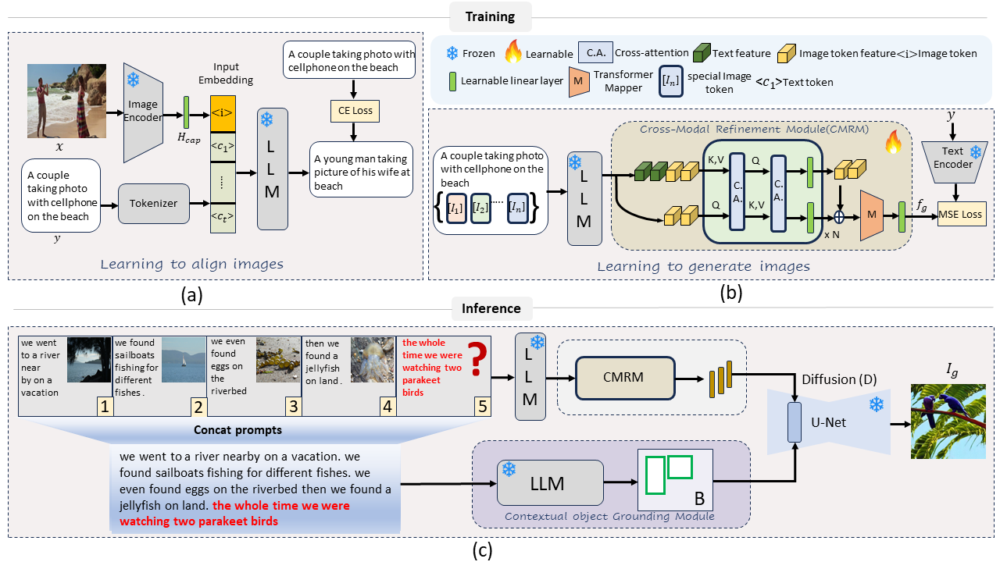
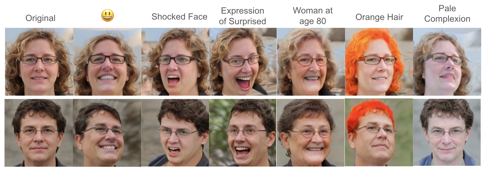

|
Amandeep Kumar I am a researcher in computer vision, affliated with the IVAL-Lab at Mohamed bin Zayed University of Artificial Intelligence (MBZUAI). I am advised by Prof. Fahad Shahbaz Khan, Dr. Hisham Cholakkal and Dr. Rao Muhammad Anwer . Prior to that, I worked as a Research Intern at the SketchX Lab of University Of Surrey, UK.
I completed my Bachelors from WBUT majoring in Information technology. Email / Google Scholar / Github / LinkedIn |

|
Research InterestI mostly work on 2D, 3D generative models and visual perception models from a small amount of data. |
Publications* denotes joint first authors |
|  |
Multi-modal Generation via Cross-Modal In-Context Learning
Amandeep Kumar, Muzammal Naseer, Sanath Narayan, Hisham Cholakkal, Rao Muhammad Anwer, Salman Khan, Fahad Shahbaz Khan Under review, 2023 code / Paper |
|  |
Efficient 3D-Aware Facial Image Editing via Attribute-Specific Prompt Learning
Amandeep Kumar, Muhammad Awais, Sanath Narayan, Hisham Cholakkal, Rao Muhammad Anwer, Salman Khan, Fahad Shahbaz Khan Under review, |

|
Generative Multiplane Neural Radiance for 3D-Aware Image Generation
Amandeep Kumar, Ankan Kumar Bhunia, Sanath Narayan, Hisham Cholakkal, Rao Muhammad Anwer, Salman Khan, Ming-Hsuan Yang, Fahad Shahbaz Khan ICCV, 2023 code / Paper |

|
Cross-modulated Few-shot Image Generation for Colorectal Tissue Classification
Amandeep Kumar, Ankan Kumar Bhunia, Sanath Narayan, Hisham Cholakkal, Rao Muhammad Anwer, Jorma Laaksonen, Fahad Shahbaz Khan MICCAI, 2023 code / Paper |

|
Sketch2Saliency: Learning to Detect Salient Objects from Human Drawing
Ayan Kumar Bhunia, Subhadeep Koley, Amandeep Kumar, Aneeshan Sain, Pinaki Nath Chowdhury, Tao Xiang, Yi-Zhe Song CVPR, 2023 project page / Paper |

|
Transformers in Remote Sensing: A Survey
Abdulaziz Amer Aleissaee*, Amandeep Kumar*, Rao Muhammad Anwer, Salman Khan, Hisham Cholakkal, Gui-Song Xia, Fahad Shahbaz Khan MDPI Journal, 2023 code / Paper |

|
Joint Visual Semantic Reasoning: Multi-Stage Decoder for Text Recognition
Ayan Kumar Bhunia, Aneeshan Sain, Amandeep Kumar, Shuvozit Ghose, Pinaki Nath Chowdhury, Yi-Zhe Song ICCV, 2021 Paper |

|
MetaHTR: Towards Writer-Adaptive Handwritten Text Recognition
Ayan Kumar Bhunia, Shuvozit Ghose, Amandeep Kumar, Pinaki Nath Chowdhury, Aneeshan Sain, Yi-Zhe Song CVPR, 2021 Paper |

|
PALMIRA: PAlm Leaf Manuscript Region Annotator A deep deformable network for Instance Segmentation of Dense and Uneven layouts in Handwritten Manuscript
S.P.Sharan, Aitha Sowmya, Amandeep Kumar, Abhishek Trivedi, Aaron Augustine, Ravi Kiran Sarvadevabhatla ICDAR, 2021 project page / code / Paper |

|
UDBNET: Unsupervised Document Binarization Network via Adversarial Game
Amandeep Kumar, Shuvozit Ghose, Pinaki Nath Chowdhury, Partha Pratim Roy Umapada Pal ICPR, 2020 code / Paper |